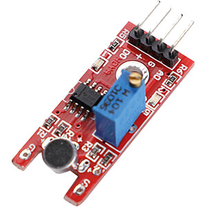

Ci-dessous ce trouve un schéma du montage expérimental du talkie walkie dont nous allons expliquer le fonctionnement au cours de cette page. Nous allons donc commencer par donner une explication de chacun des composant du talkie walkie.


Le Raspberry Pi Pico H est le centre du talkie-walkie étant donné que c'est dans le chip de ce dernier que l'on effectue l'exécution du programe et tous les calculs relatif au transmition radio.

Le module microphone de Arduino comnposé de trois PIN que nous allons utiliser pour notre projet. Le 'AO' (Analog output) qui transmet le son enregistré, 'G' (Ground) et enfin l'alimentation, signalée par un '+'.

Le LM386 fait ce qui est dans le nom: l'amplificateur audio, amplifie l'audio analogue qu'il reçoit.